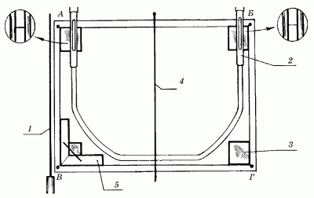

Подготовка поверхности стен к работе.

Поверхности стен, предназначенные для облицовки, не должны иметь отклонений от вертикали более 10 мм. С помощью уровня и 2-метровой дюралюминиевой рейки определяется, насколько выровнены стены. Делается это так: к стене прикладывают рейку, выравнивая ее при помощи уровня. Расстояние между поверхностью стены и приложенной к ней рейкой не должно превышать 10 мм.
Те участки стены, на которых этот предел превышен, отмечаются карандашом и затем выравниваются посредством нанесения слоя цементного раствора. Следует помнить о том, что эти места не обязательно делать идеально ровными: напротив, небольшие шероховатости требуются для лучшего сцепления раствора с поверхностью стены.
Небольшие бугорки (более 10 мм высотой), имеющиеся на поверхности стены, срубаются зубилом. Если нужно, их следует разравнивать цементным раствором, предварительно загрунтовав 7 %-ным раствором дисперсии ПВА.
Возможно, что в помещении кухни стена относительно ровная, однако скорее всего она загрязнена жирными масляными пятнами, а на такой стене раствор не схватится. Поэтому предварительно замасленные поверхности необходимо обезжиривать с помощью 3 %-ного раствора соляной кислоты или 5 %-ного раствора кальцинированной соды. Затем, спустя 2–3 минуты, остатки кислоты смываются чистой водой. После этого поверхности стен должны хорошо просохнуть.
На ровно оштукатуренные поверхности наносятся насечки для лучшего сцепления с раствором. Насечки – это неглубокие бороздки, которые делаются с помощью специальных приспособлений. При отсутствии таковых можно воспользоваться обычным молотком. После того как насечки нанесены, с помощью кисти, смоченной в воде, необходимо удалить с поверхности стен пыль.
В том случае, если при укладке плитки было решено воспользоваться мастиками, кирпичную стену нужно предварительно оштукатурить известково-гипсовым раствором, компоненты которого берутся в следующих соотношениях: 1 часть извести, 0,5 части гипса и 3 части песка. Для того чтобы мастика крепче схватывалась с поверхностью стены, третий, накрывочный, слой наносить не рекомендуется.
После подготовки поверхности стен к работе приступают к их разметке и провешиванию. Разметка и провешивание означают определение и закрепление прямых линий как по вертикали, так и по горизонтали. Для провешивания по вертикали на верхнем уровне облицовки на расстоянии примерно 30 см от угла примыкающей стены вбивают гвоздь (обозначим его буквой А). Его шляпка должна выступать над стеной на толщину плитки и толщину подстилающего слоя. Затем привязывают отвес к шляпке и определяют толщину облицовки внизу. Здесь на расстоянии 25 см от пола вбивают гвоздь (обозначим его буквой Б) так, чтобы его шляпка касалась отвеса. После этого натягивают шнур между этими двумя гвоздями.
То же самое делается и на другой стороне стены. При помощи гибкого уровня, используя принцип сообщающихся сосудов, нужно определить точку для верхнего гвоздя (обозначим его буквой В) так, как это показано на рис. 30.

Рис. 30. Провешивание стен и установка маяков: А, Б, В, Г – гвозди; 1 – отвес; 2 – гибкий уровень; 3 – маячные плитки; 4 – шнур-причалка; 5 – угольник.
Уровень воды (нулевое деление) одной из трубок уровня необходимо совместить с гвоздем, обозначенным буквой А. После этого уровень воды другой визирной трубки определит место для третьего гвоздя, обозначенного буквой В. Кстати, если работать в паре с помощником, будет намного легче справиться с установкой маяков.
Продолжая работу, как и в предыдущем случае, с помощью отвеса, привязанного к шляпке гвоздя В, определяют место для вбивания гвоздя Г, а затем натягивают причальный шнур между гвоздями В и Г.
В том случае, если гвозди вбиваются в поверхность стены с большим трудом, используют марки из гипсового раствора, устанавливаемые следующим образом: небольшое количество гипсового раствора прижимают мастерком к стене в том месте, где необходимо вбить гвоздь, затем, пока раствор не схватился, устанавливают в марку гвоздь.
Упомянутые выше причальные шнуры, натянутые между гвоздями А-Б и В-Г, определяют вертикальность будущих рядов облицовочной плитки: они помогают контролировать выравнивание вертикальных стыков в процессе укладки плитки.
С помощью того же гибкого уровня устанавливают маячные плитки по горизонтали, по углам на уровне нижнего ряда. Причальный шнур, по которому придется определять в ходе работы прямолинейность горизонтальных стыков, натягивают по верхнему краю маячных плиток. Сами же маячные плитки в конце работы вырезаются и заменяются плитками, уложенными на раствор.